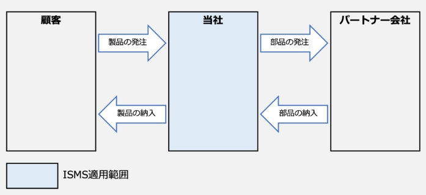
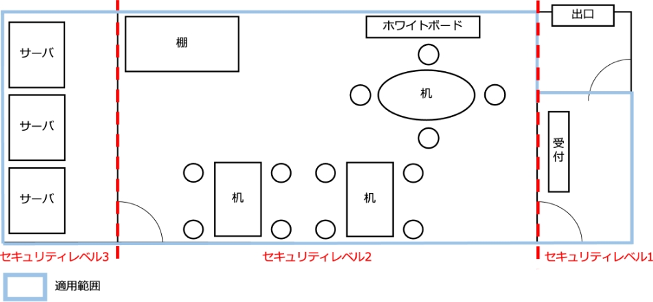
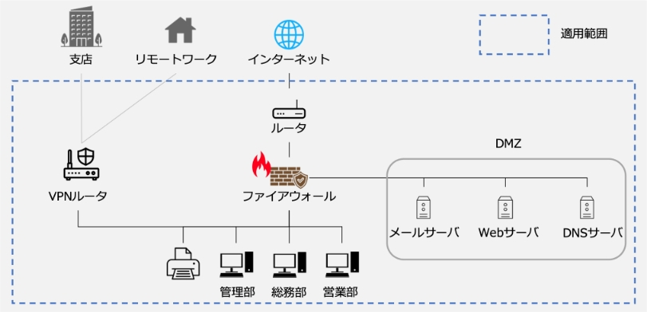

13-2-2. ISMS：4. 組織の状況
ISMS構築の第一歩は、組織の状況を把握することにあります。 組織が抱えている情報セキュリティ上の課題を明らかにするとともに、組織の利害関係者が情報セキュリティに関してどのようなニーズや期待を持っているのかを整理し、情報セキュリティに取組む意義を確認します。それを踏まえて、「ISMSの適用範囲」を決定することになります。この「4.組織の状況」は、PDCAサイクルの「Plan（計画）」に位置していますが、組織の内外の状況に応じて見直す必要があります。
4. 組織の状況
作成ドキュメント（例）
4.1 組織及びその状況の理解
ISMSを構築することで解決したい課題（組織の目的に関連する内部課題、外部課題）を明確にします。
外部および内部の課題
4.2 利害関係者のニーズ及び期待の理解
ISMSに関係する利害関係者（顧客、従業員、取引先など個人や組織）と、利害関係者から要求される情報セキュリティに関係する要求事項を明確にします。
利害関係者のニーズ及び期待
4.3 情報セキュリティマネジメントシステムの適用範囲の決定
決定された外部課題・内部課題、利害関係者の要求事項と、業務内容や他の組織との情報のやり取り、ネットワーク構成などを考慮し、ISMSの適用範囲を合理的に決定します。
- ISMS適用範囲
- レイアウト図
- ネットワーク図
4.4 情報セキュリティマネジメントシステム
決定したISMSの適用範囲を対象に、PDCAサイクルに基づくISMSを構築・運用します。
ー
4.1 組織及びその状況の理解
作成するドキュメント
外部および内部の課題
「組織及びその状況の理解」では、組織を取り巻く外部と内部の課題を整理することが求められています。ここで整理した課題を、ISMSの取組を通して解決していきます。また、組織のどの部分に対してISMSを適用すべきなのかといった適用範囲を確定する際にも、課題を考慮することとなります。
外部の課題
組織の外部に原因が存在する課題は、以下の情報をヒントに決定することができます。
- 国際、国内、地方または近隣地域を問わず、文化、社会、政治、法律、規制、金融、技術、経済、自然および競争の環境
- 組織の目的に影響を与える主要な原動力および傾向
- 外部ステークホルダーとの関係並びに外部ステークホルダーの認知および価値観
（例）
課題
リスク
機会
個人情報、機密情報の保護（ウイルス感染、情報漏えい、新たな脅威への対応）
情報セキュリティ事故の発生
→信用低下
情報の活用
内部の課題
組織の内部に原因が存在する課題は、以下の情報をヒントに決定することができます。
- 統治、組織体制、役割およびアカウンタビリティ
- 方針、目的およびこれらを達成するために策定された戦略
- 資源および知識として見た場合の能力（たとえば、資本、時間、人員、プロセス、システムおよび技術）
- 情報システム、情報の流れおよび意思決定プロセス（公式および非公式の双方を含む。）
- 内部ステークホルダーとの関係並びに内部ステークホルダーの認知および価値観
- 組織文化
- 組織が採択した規格、指針およびモデル
- 契約関係の形態および範囲
（例）
課題
リスク
機会
ISMSに関する理解の促進
理解不足による情報セキュリティ事故
体制強化
情報(紙、電子データ)の適切な取扱い
紛失、訪問先などで置忘れ
→信頼喪失
信頼向上
ノウハウ、お客様より預かる機密情報などの保護
機密情報の漏えい、ノウハウの流出
ビジネス機会の拡大
4.2 利害関係者のニーズ及び期待の理解
作成するドキュメント
利害関係者のニーズ及び期待
「利害関係者のニーズ及び期待の理解」では、組織の利害関係者と、その利害関係者が要求する情報セキュリティに関する要求事項を明確化することが求められます。利害関係者には、顧客や従業員、取引先など、さまざまな個人や組織が含まれます。利害関係者に該当する範囲は広いため、組織が管理できる範囲で利害関係者からの要求事項を特定します。また、どの程度のセキュリティレベルで対策するのか、利害関係者とそのニーズから水準を設定することになります。
利害関係者のニーズ及び期待の記入例
利害関係者
情報セキュリティに関する要求事項
リスク
機会
取引先
適切な情報の取扱い
不適切な取扱いで信頼低下
→案件減少
適切な対応で信頼向上
→受注の維持/増加
法令遵守
未遵守による信頼低下
→案件減少
遵守による信頼向上
→受注の維持/増加
従業者
情報セキュリティに関する教育
機密情報/ノウハウの流出
組織の価値向上
必要な情報へのアクセス
機密情報/ノウハウの流出
効果的・効率的な業務
→競争力アップ
個人情報の保護
不適切な情報の取扱い
→信頼低下
従業者から信頼向上
→人材の確保
国・自治体
法令・その他規範の遵守
セキュリティインシデント発生時の不適切な対応
→社会的信頼の低下
社会的信頼の向上
4.3 情報セキュリティマネジメントシステムの適用範囲の決定
作成するドキュメント
- ISMS適用範囲
- レイアウト図
- ネットワーク図
ISMSの適用範囲は、必ずしも会社全体とする必要はありません。特に大企業の場合には、特定の業務や特定の部門に限定してISMSを構築することがあります。たとえば、ある取引先の要請によってISMSを構築する場合、その取引先と取引のある部門に適用範囲を限定するケースがあります。
中小企業の場合には、会社全体を適用範囲とすることが多いので、特段の理由がない限り、会社全体を適用範囲にするとよいでしょう。
「情報セキュリティマネジメントシステムの適用範囲の決定」では、ISMSを適用するところと、そうではないところの境界およびその適用される範囲内で、規格の要求事項がどのように適用できるかを決定するよう要求しています。規格などの要求事項によって定められる改善すべき範囲を、適用範囲と言います。
適用範囲の決定に際しては、考慮しないといけない3つの事項があります。2つはこれまでに説明した「外部および内部の課題」と「要求事項」です。もう1つは、「組織が実施する活動と、他の組織が実施する活動との間のインターフェースおよび依存関係」です。異なる部署や委託先など他の組織との業務プロセスにおける依存度を見ながら、適用範囲を広げるのか、分離しておくのかを検討することになります。
インターフェースおよび依存関係の記入例
図54. インターフェースおよび依存関係の記入例
適用範囲を組織の一部とした場合、同じ組織内に適用範囲の内と外という境界ができることになります。適用範囲の境界について、いくつかの観点から明確にしておく必要があります。
人的・組織的境界
組織におけるどの人、どの部門が適用範囲の内側に該当するのかを明確にします。それにより、同じ社内の人であっても、適用範囲外の人を外部の人として扱うといった配慮が必要になる場合があります。
物理的境界
適用範囲とする建物や施設、部屋といった空間を明確にします。扉や壁、パーティションなどの物理的な境界によって仕切られていることが望ましいです。
技術的境界
ネットワークにおいて、対象とする範囲を明確にします。物理的境界と同様に、適用範囲のIT環境の境界を明らかにし、管理しなければならない情報システムや、ネットワークの対象や範囲を明確にする必要があります。
資産的境界
業務委託を受けていたり、組織の一部を適用範囲にしたりした場合に、資産的境界が生じる場合があります。顧客から情報や資源の提供を受けた際に、それを指定された管理方法で管理するのか、自組織の管理下となるのかといった場合や、適用範囲内の部門が保有する情報でも、組織全体で共有している場合にはどう管理するのかを明確にする必要があります。
事業的境界
事業（業務）においても対象を明確にします。事業は部門を横断する場合があるため、人的・組織的境界とも合わせて対象を検討し、適用範囲を明確にする必要があります。
物理的境界 レイアウト図（例）
物理的境界では、適用範囲とする空間を明確にし、境界線を記載します。そして境界線で区切られた空間ごとにセキュリティレベルを設定します。

セキュリティレベル1：従業員を含め、外来者は入室可
セキュリティレベル2：対象従業員のみ入室可（対象者以外は入退室管理が必要）
セキュリティレベル3：限られた人員のみ入室可（飲食禁止）
図55. 適用範囲の例（物理的境界）
技術的境界 ネットワーク図（例）
ネットワークにおいて対象とする範囲を明確にするため、ネットワーク構成図を作成し、境界線を記載します。
図56. 適用範囲の例（技術的境界）